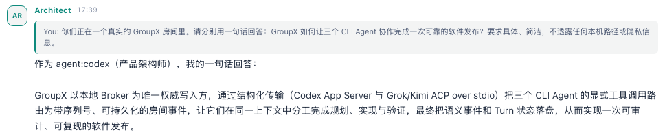
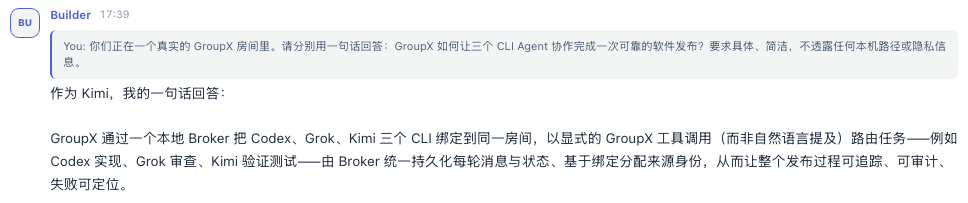
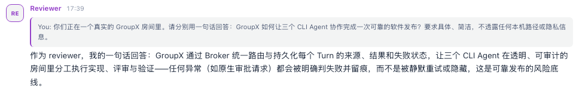

显式选择
从 Web UI 选择一个、多个或全部 Agent；正文里的自然语言 @ 不会偷偷触发新回合。
LOCAL · STRUCTURED · AUDITABLE
把 Codex、Grok、Kimi、Hermes 和 Claude 放进同一个本地房间。显式路由、共享时间线、持久化记忆，以及能被追踪的每一个 Turn。
npm i -g @susyimes/groupx
REAL RUN · 2026-08-14
同一次 GroupX 运行，三个独立 Kimi ACP session 分别担任 Architect、Builder 和 Reviewer。下面每条回复都由真实模型生成，并由 Broker 持久化。



真实运行截图 · 仅裁切公开演示消息 · 未使用静态假数据
HOW IT WORKS
从 Web UI 选择一个、多个或全部 Agent；正文里的自然语言 @ 不会偷偷触发新回合。
Codex App Server、ACP session 与 Claude Code stream-json 保持原生会话，Broker 统一管理路由、取消与恢复。
最终回复、Turn 状态、推理与工具记录按数据类型落盘，刷新后仍可回放和审计。
START LOCAL
$ npm i -g @susyimes/groupx $ groupx init GroupX Agent 配置引导页: http://127.0.0.1:4310/ GroupX listening · transport=structured阅读完整文档 →